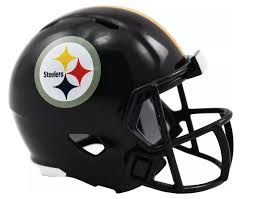
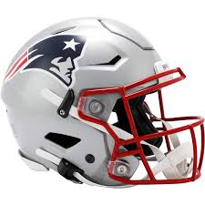
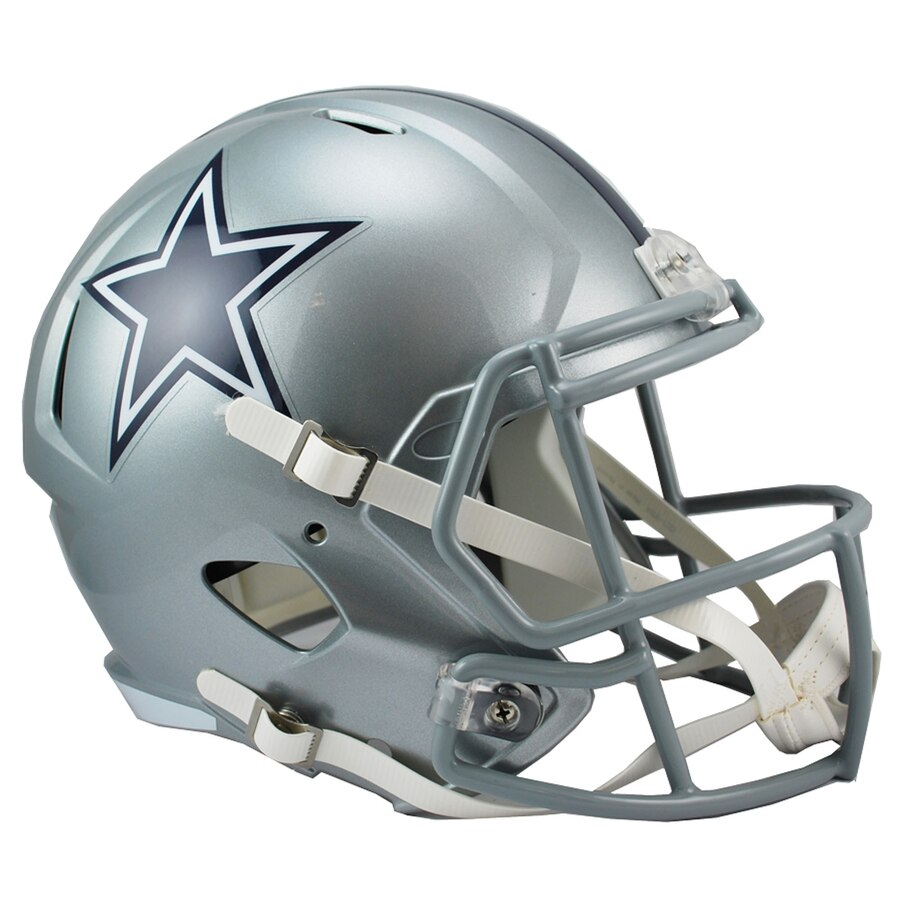

1972, 1978, 1993, 1994, 1996

1982, 1985, 1989, 1990, 1995

1967, 1968, 1997, 2011

1987, 1991, 2008, 2012
TRABAJO EXTRA
|

Los aceros de Pitsburg fue el primer equipo en lograr 6 triunfos en el superbowl (1975, 1976, 1979, 1980, 2006, 2009) |
LOS EQUIPOS MAS GANADORES DEL SUPERBOWLGanadores de 4 o más trofeos de Vince Lombardi |

Los patriotas de New England es el segundo equipo en lograr 6 triunfos en el superbowl (2002, 2004, 2005, 2015, 2017, 2019) |
|

1972, 1978, 1993, 1994, 1996 |
1982, 1985, 1989, 1990, 1995 |
1967, 1968, 1997, 2011 |
1987, 1991, 2008, 2012 |
Broncos (3), Raiders (3), Redskins (3), Delfines (2), Potros (2)
Quieres conocer más? Visita: NFL.com
Datos del autor: Patricio Cisneros